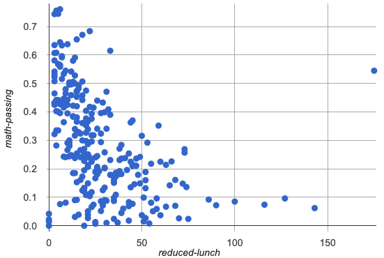

{kind=link}
Tahli thinks the outlier should be removed before they start analyzing, and Fernando thinks it should stay. Here are their reasons:
| Tahli’s Reasons: | Fernando’s Reasons: |
|---|---|
This outlier is so far from every other school - it has to be a mistake. Maybe someone entered the poverty level or the test scores incorrectly! We don’t want those errors to influence our analysis. Or maybe it’s a magnet, exam or private school that gets all the top-performing students. It’s not right to compare that to non-magnet schools. |
Even if it’s a magnet, those are still Michigan students and their data should not be erased. Maybe it’s not a mistake or a special school! Maybe the school has an amazing new strategy that’s different from other schools! Instead of removing an inconvenient data point from the analysis, we should be focusing our analysis on what is happening there. |
1 Do you think this outlier should stay or go? Why?
2 What information would help you make your decision?
Look up the school and see if it’s a magnet, find out what the school is doing
see if other magnet, private, or exams schools are already included
These materials were developed partly through support of the National Science Foundation,
(awards 1042210, 1535276, 1648684, and 1738598).  Bootstrap by the Bootstrap Community is licensed under a Creative Commons 4.0 Unported License. This license does not grant permission to run training or professional development. Offering training or professional development with materials substantially derived from Bootstrap must be approved in writing by a Bootstrap Director. Permissions beyond the scope of this license, such as to run training, may be available by contacting contact@BootstrapWorld.org.
Bootstrap by the Bootstrap Community is licensed under a Creative Commons 4.0 Unported License. This license does not grant permission to run training or professional development. Offering training or professional development with materials substantially derived from Bootstrap must be approved in writing by a Bootstrap Director. Permissions beyond the scope of this license, such as to run training, may be available by contacting contact@BootstrapWorld.org.